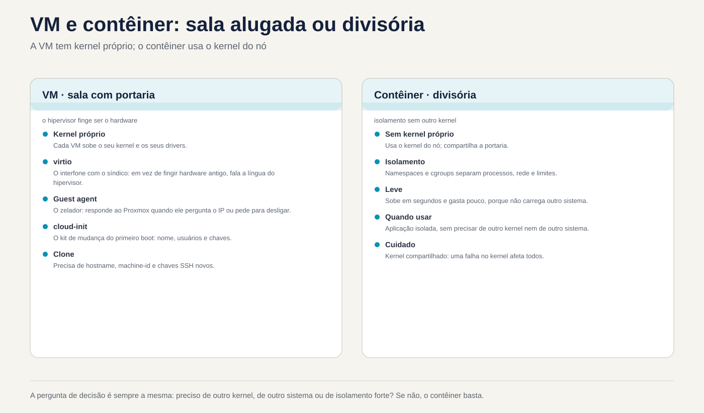
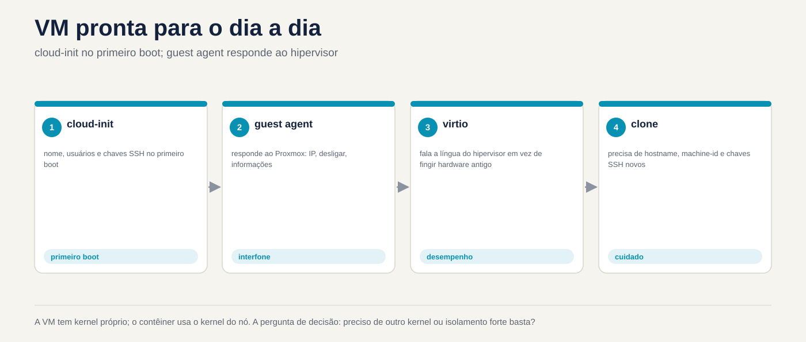

Lezione 5.3 · Linux come ospite
Nelle lezioni 5.1 e 5.2 hai visto il kernel comunicare con l'hardware. Tuttavia, nelle tue due VM, questo hardware non esiste: quello che risponde è QEMU, in esecuzione sul nodo Proxmox. Oggi vedi Linux all'interno della VM. Come sa di essere un ospite, quali driver utilizza per renderlo più veloce, come parla con l'hypervisor tramite l'agente guest e come si configura da solo al primo avvio tramite cloud-init. Vedrai anche cosa succede quando qualcuno clona una VM e dimentica che alcune cose devono essere uniche. Alla fine, confronti una VM con un contenitore, che assomiglia a una macchina ma utilizza il kernel di un'altra.
Chiave di questa lezione:
systemd-detect-virtehostnamectlper sapere dove ti trovi; i dispositivivirtio;qemu-guest-agent, su entrambi i lati (pacchetto in VM, opzione in Proxmox); cosa fa cloud-init al primo avvio; cosa deve essere univoco in un clone: nome host,/etc/machine-ide chiavi SSH dell'host; e la differenza tra VM e contenitore: il kernel. Il resto è approfondito.
| File | lezione 5.3 |
|---|---|
| Modulo | M5 · Hardware, kernel e virtualizzazione, lezione 3 di 3 |
| Quando | Settimana 9 |
| Alla fine puoi | Dire se Linux viene eseguito in una macchina virtuale, in un contenitore o su una macchina fisica e con quale hypervisor; riconoscere i dispositivi virtio e i loro moduli; installare e connettere l'agente guest sulla VM e Proxmox e utilizzarlo con qm agent e qm guest cmd; spiegare cosa fa cloud-init e quando viene eseguito; elencare ciò che deve essere univoco in un clone e scambiare il nome host, machine-id e le chiavi SSH dell'host; vedi in pratica che un contenitore utilizza il kernel dell'host |
| Articoli di prova | LPIC-1 102.6 (Linux come ospite di virtualizzazione) · RHCSA (il test viene eseguito su una VM; l'agente ospite e hostnamectl compaiono nella vita di tutti i giorni) |
| Prerequisiti | lezione 5.1 (lspci -k, /sys, dmesg); lezione 5.2 (lsmod, modinfo); lezione 4.2 (systemd e unità); SSH tra il tuo computer e le VM |
| Meteo | Intorno alle 2h30, più il Modulo Challenge |
| Istantanee | m5a3-start e m5a3-end su entrambe le VM; m5-challenge prima della sfida |
1 · Riscaldamento
Tre domande, a colpo d'occhio. Scrivi le risposte; la chiave di risposta viene visualizzata alla fine.
- Accedi tramite SSH a una macchina sconosciuta. Indovina: con un solo comando puoi sapere se è una VM?
- Clona una VM Linux in Proxmox e connetti i due. Indovina: avranno lo stesso
/etc/machine-id? E ha importanza? - Un contenitore Debian viene eseguito all'interno del tuo laboratorio roccioso. Indovina: cosa mostra
uname -ral suo interno, il kernel Debian o quello di Rocky?
2 · Perché è importante
| Il cosiddetto | La risposta sbagliata | Cosa provoca |
|---|---|---|
| "Proxmox non mostra l'IP della VM e lo spegnimento tramite la GUI non funziona" | Spegnimento con il pulsante Stop | Fermarsi è staccare la spina. Ciò che mancava era l'agente guest: con esso Proxmox vede l'IP, richiede uno spegnimento pulito e congela il file system durante il backup |
| "Ho clonato la VM e ora combattono entrambe per lo stesso IP DHCP e il monitoraggio ne vede solo uno" | Cambiare il nome host e pensare che sia finita | Le chiavi machine-id e SSH rimangono le stesse. A seconda della rete, DHCP identifica i due come la stessa macchina; anche il giornale, il monitoraggio e molti agenti utilizzano machine-id |
"SSH dice che l'ID del server è cambiato: REMOTE HOST IDENTIFICATION HAS CHANGED" | Cancellare l'intero known_hosts o ignorare l'avviso | A volte è solo un clone con nuove chiavi. A volte è un attacco. Chissà quando sono cambiate le chiavi e perché, decide con calma e toglie solo la riga giusta |
| "Lo eseguiremo in un contenitore, che è più leggero" | Tratta il contenitore come una VM più piccola | Il contenitore utilizza il kernel dell'host. Non carica il proprio modulo, non sceglie la versione del kernel e, se il kernel host va giù, va giù con lui |
3 · Modello mentale
Pensa a un edificio commerciale, come nella lezione 5.1. Una VM è una stanza in affitto con il proprio concierge: il suo kernel è tuo, con i tuoi driver, e l'hypervisor finge di essere l'hardware. I driver
virtiosono il citofono diretto con il gestore: invece di fingere di utilizzare hardware vecchio, l'ospite sa di trovarsi in una VM e parla la lingua dell'hypervisor, che è più veloce. Il guest agent è il custode della stanza, che assiste il gestore (Proxmox) quando chiede l'IP o chiede di chiudere tutto. cloud-init è il kit di cambio: il primo giorno configura la stanza con il nome, gli utenti e le chiavi presenti nella confezione. Un contenitore non è una stanza con un cancello: è una partizione all'interno di un'altra stanza, che utilizza lo stesso cancello (lo stesso kernel).
MÁQUINA FÍSICA (nó Proxmox)
┌───────────────────────────────────────────────────────────────┐
│ kernel do nó (KVM) │
│ ┌────────────── QEMU ─────────────┐ ┌──── LXC ───────────┐ │
│ │ VM rocky-lab │ │ contêiner │ │
│ │ kernel PRÓPRIO │ │ processos isolados │ │
│ │ virtio_net, virtio_scsi │ │ SEM kernel próprio │ │
│ │ qemu-guest-agent ◄── canal ────┼─► │ usa o kernel do nó │ │
│ │ cloud-init (1º boot) virtio-serial │ │ │
│ └─────────────────────────────────┘ └─────────────────────┘ │
└───────────────────────────────────────────────────────────────┘

4 · Gli elementi essenziali
Dove mi trovo?
| Comando | Che mostra |
|---|---|
systemd-detect-virt | kvm, qemu, vmware, microsoft, oracle... in una VM; lxc, podman, docker... in un contenitore; none sulla macchina fisica |
systemd-detect-virt -c / -v | Solo contenitore/Solo VM |
hostnamectl | Riga Virtualization: e Chassis: vm, oltre al nome host e al kernel |
lscpu | grep -i hypervisor | Hypervisor vendor: KVM |
sudo dmidecode -s system-product-name | Il "modello" inventato dall'hypervisor, come Standard PC (Q35 + ICH9, 2009) |
I driver virtio
L'hypervisor può imitare hardware vecchio e reale, come la scheda di rete e1000 o un disco IDE. Funziona su qualsiasi sistema, ma è lento, perché ogni accesso è tradotto. virtio è un hardware che esiste solo nelle VM: il guest lo sa e parla direttamente con l'hypervisor. Su Linux, i driver virtio sono già inclusi nel kernel.
| Dispositivo su Proxmox | Autista in ospite | Come appare |
|---|---|---|
| VirtIO SCSI (controller) | virtio_scsi | Dischi sda, sdb... |
| Blocco VirtIO | virtio_blk | Dischi vda, vdb... |
| Scheda VirtIO | virtio_net | ens18 o eth0 |
| Palloncino | virtio_balloon | L'hypervisor può riprendere la RAM |
| RNG VirtIO | virtio_rng | Fonte di casualità |
| Seriale VirtIO | virtio_console | Il canale dell'agente guest |
Il canale dell'agente guest
qemu-guest-agent è un servizio che viene eseguito all'interno della VM e risponde a Proxmox su un canale seriale virtuale. Ha bisogno di due metà e dimenticarne una è il classico errore:
- In Proxmox: opzione
QEMU Guest Agentattiva (qm set ID --agent enabled=1). Crea il dispositivo seriale, ed è valido solo dopo aver spento e riacceso la VM tramite Proxmox. - Nella VM: il pacchetto
qemu-guest-agentinstallato e il servizio in esecuzione.
Con entrambe le metà, Proxmox mostra gli IP nella GUI, esegue un arresto pulito, blocca il file system (fsfreeze) durante il backup in modo che la copia risulti coerente e consente di porre domande con qm agent e qm guest cmd.
cloud-init
O cloud-init viene eseguito al primo avvio di un'immagine cloud e configura la macchina con i dati che provengono dall'esterno: nome host, utenti, chiavi SSH autorizzate, rete e pacchetti. Questi dati provengono da una origine dati: un servizio di metadati in AWS o OpenStack o un CD virtuale in Proxmox (la scheda Cloud-Init). Cloud-init memorizza un instance-id: finché non cambia, la macchina non è considerata nuova e non rifa la prima configurazione di avvio.
| Comando o file | E per |
|---|---|
cloud-init status --long | Ha funzionato? E' finita? Ha fatto un errore? |
/var/log/cloud-init.log e cloud-init-output.log | Quello che ha fatto, passo dopo passo |
/etc/cloud/cloud.cfg e /etc/cloud/cloud.cfg.d/ | Che cosa è autorizzato a modificare |
sudo cloud-init clean --logs | Cancella lo stato. Al successivo avvio si comporta come se fosse la prima volta. Questo è ciò che fai prima di trasformare la VM in un modello |
Cloni e cosa deve essere univoco
Un clone completo copia l'intero disco. Un clone collegato (clone collegato) utilizza il disco modello come base e registra solo le differenze. In entrambi i casi, il disco clone inizia come l'originale, con tutto al suo interno:
| Identificatore | Dov'è | Chi cambia |
|---|---|---|
| Indirizzo MAC | Configurazione della macchina virtuale | Proxmox ne genera uno nuovo nel clone |
| Nome host | /etc/hostname e /etc/hosts | Tu, con hostnamectl set-hostname, o cloud-init |
machine-id | /etc/machine-id (in Debian anche /var/lib/dbus/machine-id) | Tu, con systemd-machine-id-setup, oppure l'immagine arriva già con un file vuoto |
| Chiavi SSH host | /etc/ssh/ssh_host_* | Tu, con ssh-keygen -A, o cloud-init |
| IP fisso | Configurazione di rete | Tu, o cloud-init |
machine-id è il "CPF" dell'installazione: 32 caratteri esadecimali creati al momento dell'installazione. Il journal memorizza i registri in una cartella con quel nome, systemd-networkd utilizza questo ID per identificarsi in DHCP e anche molti agenti di monitoraggio o backup fanno altrettanto. Due cloni con lo stesso machine-id sono, per questi strumenti, la stessa macchina.
Le chiavi SSH host dimostrano al client che il server è lo stesso dell'ultima volta. Due cloni con le stesse chiavi sono indistinguibili per SSH: se uno di essi viene compromesso, la sua chiave privata viene utilizzata per impersonare l'altro.
VM e contenitore affiancati
VM (QEMU/KVM, qm) | Contenitore (LXC con pct, Podman, Docker) | |
|---|---|---|
| Nocciolo | Proprio | |
| dell'ospite Avvio | GRUB, initramfs, systemd | Inizia proprio nel processo principale, a volte un systemd |
Moduli e sysctl | Carica e modifica il tuo | Non carica il modulo; molti sysctl sono di sola lettura o di solo host |
| Altro sistema operativo | Chiunque, anche Windows | Solo Linux, con il kernel dell'host |
| Isolamento | Forte: l'hypervisor separa | Più debole: tutto dipende dal kernel condiviso |
| Costo | Più RAM e più disco | Leggero: si apre in pochi secondi |
Rocky × Debian
| Tema | Roccioso | Debian |
|---|---|---|
| Agente ospite | dnf install qemu-guest-agent | apt install qemu-guest-agent |
| Connetti il servizio | Il pacchetto non si accende da solo in tutte le versioni: verificare con systemctl status e connettersi con systemctl enable --now | Il servizio si attiva quando appare il dispositivo seriale; senza l'opzione attivata in Proxmox, rimane bloccato in attesa |
| Chiave SSH host mancante | sshd-keygen@.service genera quelli mancanti quando sshd sale | ssh non sale. È necessario eseguire ssh-keygen -A o dpkg-reconfigure openssh-server |
/var/lib/dbus/machine-id | Di solito non esiste; il D-Bus legge /etc/machine-id | Di solito si tratta di un collegamento a /etc/machine-id; verificare con ls -l |
| Immagini nuvola | Vieni con cloud-init | Vengono forniti con cloud-init |
Cosa è incluso nel test. In LPIC-1 102.6, il test richiede concetti: la differenza tra VM e contenitore; cos'è un hypervisor; cos'è IaaS; quali driver e strumenti guest esistono (come l'agente guest); cosa fa cloud-init; e, più spesso, ciò che deve essere unico in un clone: il machine-id di D-Bus e systemd, le chiavi SSH dell'host e il nome host. Presso RHCSA, il test viene eseguito su una VM ed è obbligatorio sapere come modificare il nome host con hostnamectl.
5 · Laboratorio guidato
Passaggio 0 · Istantanea e cartella
Nel nodo Proxmox:
qm snapshot 201 m5a3-inicio
qm snapshot 202 m5a3-inicioIn ciascuna VM:
mkdir -p ~/lab53 && cd ~/lab53Passaggio 1 · Dove mi trovo?
In entrambi VM:
systemd-detect-virt
hostnamectl
lscpu | grep -i hypervisor
sudo dmidecode -s system-product-name
lspci | grep -i virtio
lsmod | grep virtioSul nodo Proxmox, eseguire anche systemd-detect-virt. Dovrebbe rispondere none: il nodo è la macchina fisica.
Nota in ~/lab53/notas.txt cosa systemd-detect-virt ha risposto in ogni luogo e quali moduli virtio trasporta ciascuna VM. Confronta con ciò che mostra la scheda Hardware della VM in Proxmox: il controller del disco e il modello della scheda di rete.
Passo 2 · L'agente guest, le due metà
Prima di tutto, la metà della VM. In rocky-lab:
sudo dnf -y install qemu-guest-agent
sudo systemctl enable --now qemu-guest-agent
systemctl status qemu-guest-agent --no-pagerIn debian-lab:
sudo apt -y install qemu-guest-agent
systemctl status qemu-guest-agent --no-pagerIn Debian, il servizio potrebbe apparire interrotto, in attesa del dispositivo virtio-ports/org.qemu.guest_agent.0. Ciò è normale finché l'altra metà non è collegata.
Ora, la metà Proxmox. Nel nodo:
qm config 201 | grep agent
qm set 201 --agent enabled=1
qm set 202 --agent enabled=1Decidi 1
Hai attivato l'opzione agente. Su debian-lab, esegui sudo systemctl reboot. Dopo che ritorna, esegui qm agent 202 ping sul nodo. Cosa succede?
- A) Risponde senza errori, perché la VM è stata riavviata.
- B) Dà un errore, perché il riavvio dall'interno della VM non applica la modifica hardware.
- C) Dà un errore, perché il servizio Debian necessita del manuale
enable.
Controllare prima un'opzione. Allora fai il test.
| Se hai selezionato | Risultato | Perché |
|---|---|---|
| A | Sbagliato | Il riavvio dall'interno riavvia il sistema, ma il processo QEMU rimane lo stesso, con il vecchio hardware. La GUI mostra l'opzione come modifica in sospeso |
| B | Capito bene | La modifica hardware è valida solo quando Proxmox spegne e riaccende la VM: qm shutdown e qm start, oppure qm reboot, oppure Riavvio GUI |
| C | Sbagliato | In Debian, il servizio si avvia da solo quando appare il dispositivo. Il problema è che il dispositivo non esiste ancora |
Ora applicalo sul serio e parla con l'agente:
qm reboot 201
qm reboot 202
# espere as VMs voltarem
qm agent 201 ping && echo ok
qm agent 202 ping && echo ok
qm guest cmd 202 get-osinfo
qm guest cmd 202 network-get-interfaces | grep -E '"name"|ip-address"'
qm guest cmd 201 get-fsinfo | grep -E 'mountpoint|type'Nella GUI, la pagina Riepilogo delle due VM ora mostra gli IP.
Per risolvere: l'agente guest funziona solo con le due metà: il pacchetto all'interno della VM e l'opzione in Proxmox, applicata con uno spegnimento e riaccensione effettuato da Proxmox.
Passaggio 3 · cloud-init, solo cercando
Le tue VM sono state installate da ISO, quindi probabilmente cloud-init non è presente. Dai un'occhiata:
command -v cloud-init || echo "cloud-init não instalado"Se è installato, guarda senza modificare nulla:
cloud-init status --long
sudo tail -20 /var/log/cloud-init.log
ls /etc/cloud/cloud.cfg.d/Sul nodo, guarda come Proxmox fornisce i dati a cloud-init da una VM che utilizza un'immagine cloud:
man qm | grep -A2 -E '^ +--(ciuser|sshkeys|ipconfig0)'Opzioni --ciuser, --sshkeys e --ipconfig0 vanno su un CD virtuale che cloud-init legge all'avvio. Non creerai un modello adesso. Appare di nuovo nel modulo di automazione.
Passo 4 · L'identità della VM
In Debian-lab:
hostnamectl hostname
cat /etc/machine-id
ls -l /var/lib/dbus/machine-id
ls /var/log/journal/
ls -l /etc/ssh/ssh_host_*
for k in /etc/ssh/ssh_host_*_key.pub; do ssh-keygen -lf "$k"; doneSul computer, confrontare l'impronta digitale con quella salvata dal client SSH:
ssh-keygen -F IP_DA_DEBIAN -lIl nome della cartella in /var/log/journal/ è machine-id. Memorizza le tre cose in ~/lab53/identidade.txt: nome host, machine-id e la stampa della chiave ed25519. Ne avrai bisogno nella sfida.
Decidi 2
Clone debian-lab senza toccare nulla e accendi il clone. Quali di queste cose il clone ha uguale all'originale?
- A) Solo il nome host.
- B) Nome host,
machine-ide chiavi SSH dell'host. Il MAC è nuovo. - C) Tutto, compreso il MAC.
Verificare prima un'opzione. Dai un'occhiata al modulo Challenge.
| Se hai selezionato | Risultato | Perché |
|---|---|---|
| A | Sbagliato | Viene copiato l'intero disco e con esso i file /etc/machine-id e /etc/ssh/ssh_host_* |
| B | Capito bene | Il MAC è nella configurazione della VM e Proxmox ne genera un altro nel clone. Tutto nell'album è lo stesso |
| C | Sbagliato | Proxmox modifica il MAC esattamente in modo che entrambi possano trovarsi sulla stessa rete |
Per risolvere: clone copia il disco. Tutto ciò che identifica la macchina e risiede sul disco deve essere modificato manualmente, con uno strumento come virt-sysprep o con cloud-init.
Passo 5 · Un contenitore accanto a
In rocky-lab, con internet:
sudo dnf -y install podman
uname -r
podman run --rm docker.io/library/debian:12 cat /etc/os-release
podman run --rm docker.io/library/debian:12 uname -r
podman run --rm docker.io/library/debian:12 ls /boot /lib/modulesIl contenitore dice che è Debian 12, ma uname -r mostra il kernel Rocky, con el9 nel nome. E non c'è /boot né moduli: non c'è nessun kernel da caricare. Questa è la risposta alla domanda 3 del Warm-Up, in diretta.
Per finire, prova a modificare un parametro del kernel dall'interno del contenitore:
podman run --rm docker.io/library/debian:12 sh -c 'echo 10 > /proc/sys/vm/swappiness'Il kernel rifiuta, perché /proc/sys appare di sola lettura nel contenitore: il kernel appartiene all'host e l'host ne è responsabile.
6 · Interrompi e correggi
In questa interruzione elimini le chiavi SSH dell'host su entrambe le VM e vedi che ciascuna la distribuzione reagisce diversamente. Fallo tramite la console Proxmox, non tramite SSH. Una sessione SSH aperta non si arresta in modo anomalo al riavvio del servizio, ma non è possibile aprirne un'altra.


Su entrambe le VM:
sudo cp -a /etc/ssh ~/lab53/ssh-antes
sudo rm /etc/ssh/ssh_host_*Su rocky-lab, sudo systemctl restart sshd. In Debian-Lab, sudo systemctl restart ssh. Quindi, indaga senza guardare la riparazione:
systemctl status sshd --no-pager # Roccioso
systemctl status ssh --no-pager # Debian
journalctl -b -u ssh --no-pager | tail -5
ls /etc/ssh/ssh_host_*In Rocky, sshd appare: sshd-keygen@ ha generato prima nuove chiavi. Su Debian, ssh fallisce, con qualcosa come no hostkeys available. Dal tuo computer, prova ad inserirli entrambi. Rocky risponde con l'avvertimento REMOTE HOST IDENTIFICATION HAS CHANGED, perché le chiavi sono cambiate. Debian rifiuta la connessione.
La correzione in Debian:
sudo ssh-keygen -A
sudo systemctl restart ssh
systemctl status ssh --no-pagerSul tuo computer, rimuovi semplicemente la vecchia riga da ciascuna VM ed effettua nuovamente l'accesso, controllando la nuova impronta digitale con ciò che mostra la console:
ssh-keygen -R IP_DA_ROCKY
ssh-keygen -R IP_DA_DEBIANLa lezione: l'avviso di cambio di chiave non può essere ignorato e non può essere risolto cancellando l'intero known_hosts. Scopri perché la chiave è cambiata, controlla la nuova stampa in un altro modo (qui, la console) e solo dopo rimuovi la vecchia riga.
7 · Insidie
- Accedere l'agente solo su un lato. Il pacchetto senza l'opzione in Proxmox, o l'opzione senza pacchetto, danno lo stesso risultato: niente.
- Riavvia dall'interno e attendi che l'hardware cambi. Basta spegnerlo e riaccenderlo. di nuovo. di Proxmox.
- Elimina
/etc/machine-id. Il modo giusto è svuotare o rimuovere e ricreare consystemd-machine-id-setupe controllare/var/lib/dbus/machine-idin Debian. Un sistema senza il file potrebbe non caricarsi correttamente. - Crea modello senza pulizia. Se trasformi una VM in un modello senza pulire
machine-id, chiavi SSH e stato cloud-init, tutti i cloni nascono gemelli. - Dimentica
/etc/hosts.hostnamectl set-hostnamecambia/etc/hostname, ma il vecchio nome rimane in/etc/hostsesudopotrebbe essere lento o lamentarsi. - Tratta il contenitore come una VM. Non ha un proprio kernel: i moduli, molti
sysctle la versione del kernel provengono dall'host. - Clona con IP fisso connesso alla rete. Due IP identici sulla stessa rete bloccano lentamente entrambe le macchine. Accendere il clone con la scheda scollegata fino a cambiare l'IP.
8 · Quiz
- Quale comando ti dice se ti trovi in una macchina virtuale, in un contenitore o in una macchina fisica?
- Quali sono le due metà dell'agente ospite e come si applica la metà Proxmox?
- Cosa fa cloud-init e quando?
- Nomina tre cose che devono essere univoche in un clone e indica dove si trova ciascuna.
- Perché un contenitore Debian all'interno di Rocky mostra il kernel di Rocky?
- Quale file contiene l'ID macchina systemd e quale comando ne crea uno nuovo?
9 · Cola
Da conoscere a memoria
| Comando o file | Fare |
|---|---|
systemd-detect-virt / hostnamectl | Dove mi trovo / nome host, chassis e virtualizzazione |
qm set ID --agent enabled=1 + qm reboot ID | Connetti l'agente a Proxmox e applica |
qm agent ID ping / qm guest cmd ID network-get-interfaces | Testare l'agente/richiedere gli IP |
hostnamectl set-hostname nome | Modificare il nome host (e poi /etc/hosts) |
/etc/machine-id + systemd-machine-id-setup | L'ID di installazione e chi la ricrea |
/etc/ssh/ssh_host_* + ssh-keygen -A | Le chiavi dell'host e chi genera quelle mancanti |
ssh-keygen -R host | Rimuovere solo quell'host da known_hosts |
Per consultare
systemd-detect-virt -c e -v, lscpu, dmidecode, virtio_scsi, virtio_blk, virtio_net, virtio_balloon, qm guest cmd ID get-osinfo, get-fsinfo, fsfreeze-status, cloud-init status --long, cloud-init clean --logs, /var/log/cloud-init.log, /etc/cloud/cloud.cfg.d/, qm set --ciuser --sshkeys --ipconfig0, qm clone --full, qm template, virt-sysprep, sshd-keygen@.service, dpkg-reconfigure openssh-server, ssh-keygen -lf, ssh-keygen -F, podman run --rm, pct list.
Flashcard
| Domanda | Rispondi |
|---|---|
systemd-detect-virt sulla macchina fisica risponde... | none |
| Il riavvio dall'interno della VM applica modifiche hardware? | NO; basta spegnere e accendere Proxmox |
| Il clone di Proxmox cambia il MAC? | SÌ; cosa c'è sul disco, non |
| Debian senza chiave SSH host... | ssh non sale; Rocky genera da solo le nuove chiavi |
| Un contenitore ha il proprio kernel? | NO; utilizza |
10 · Checklist e chiusura
- [ ] Ho scoperto dove viene eseguita ciascuna macchina con
systemd-detect-virtehostnamectl - [ ] Ho riconosciuto i dispositivi e i moduli
virtiodelle due VM - [ ] Ho attivato l'agente guest su entrambi i lati e ho visto gli IP con
qm guest cmd - [ ] Ho spiegato cos'è cloud-init funziona, anche senza che sia installato
- [ ] Ho annotato il nome host,
machine-ide la chiave SSH da debian-lab - [ ] Ho visto un container Debian in esecuzione sul kernel Rocky
- [ ] Ho cancellato le chiavi SSH dell'host, ho visto la differenza tra le distribuzioni e l'ho corretta
Ultimo esercizio, senza guardare la lezione: dall'interno di ogni VM, senza usare la GUI, dico così IP e confermare tramite il nodo con qm guest cmd. Quindi, in Rocky-Lab, elimina l'immagine scaricata da Podman (podman images, poi podman rmi con il nome che appare).
Riavvia e conferenza: riavvia le due VM tramite Proxmox (qm reboot) e controlla:
systemctl status qemu-guest-agent --no-pager # attivo (in esecuzione)
systemctl --failed # vuoto
ls ~/lab53Nel nodo, qm agent 201 ping e qm agent 202 ping senza errori.
Termina snapshot, sul nodo Proxmox:
qm snapshot 201 m5a3-fim
qm snapshot 202 m5a3-fimL'agente guest è attivo da ora in poi. Aiuterà con i backup e i moduli successivi.
11 · Nella vita reale
Mission, sola lettura. Su un real server che gestisci, basta eseguire questi comandi, che non cambiano nulla:
systemd-detect-virt
hostnamectl
systemctl is-active qemu-guest-agent 2>/dev/null || echo "sem guest agent"
cat /etc/machine-id
command -v cloud-init && cloud-init statusSe è una VM Proxmox, guarda anche, nel nodo, basta leggere: qm config ID | grep agent.
Risposta: le VM che gestisci hanno l'agente guest su entrambi i lati? In caso contrario, il backup verrà eseguito senza bloccare il file system. Due delle vostre macchine hanno lo stesso machine-id? Questo tradisce un clone di scarsa qualità. Scrivi quello che pensi. Non cambiare nulla da solo.
Diario: scrivi tre righe su ciò che hai imparato oggi e una domanda che ti è rimasta.
Domani, senza guardare:
- Elenca, in ordine, cosa faresti a un clone appena creato prima di collegarlo alla rete.
- Spiegare perché il riavvio dall'interno della VM non attiva l'agente guest.
- Fornisci un vantaggio e uno svantaggio del contenitore rispetto alla VM.
12 · Scava più a fondo quando vuoi
virt-sysprep(pacchettoguestfs-toolsolibguestfs-tools): puliscemachine-id, chiavi SSH, log e cronologia da un disco VM spento.- Modelli in Proxmox con immagini cloud di Rocky e Debian:
qm importdisk, la scheda Cloud-Init eqm template. - I file cloud-init
user-data,meta-dataenetwork-confige l'origine dati NoCloud. - Clone collegato e clone completo: spazio, prestazioni e perché il modello di un clone collegato non può essere eliminato.
systemd-firstbooteConditionFirstBoot=: come systemd sa che è il primo avvio.- Contenitori LXC in Proxmox (
pct), privilegiati e non privilegiati. - Spazi dei nomi e cgroup: le parti del kernel che compongono un contenitore.
In DeepTutor: !explica guest agent do QEMU, !feynman diferença entre VM e contêiner, !quiz Linux como convidado.
Sfida del modulo 5
Missione: clonare debian-lab e dare al clone la propria identità: nome host, machine-id e host SSH chiavi. Alla fine le due VM sono connesse contemporaneamente, sulla stessa rete, senza conflitti. Senza guardare la lezione; il Modello contiene suggerimenti, se rimani bloccato.
Prima di iniziare, nel nodo Proxmox:
qm snapshot 202 m5-desafio
qm list # scegli un VMID libero, ad esempio 902Regole:
- Clone completo, in archivio
vm-hdd, con il nomedebian-clone. - Accendere il clone con la scheda di rete sconnessa e fare tutto tramite console, fino al cambio identità. Se debian-lab utilizza un IP fisso, cambiare anche l'IP.
- Il debian-lab originale non cambia affatto.
- Tempo previsto: 30 minuti.
Criteri di successo:
| Controlla | Come | Previsto |
|---|---|---|
| Nome host | hostnamectl hostname nel clone | debian-clone e /etc/hosts senza il vecchio nome |
machine-id | cat /etc/machine-id in entrambi | Diverso; quello del clone con 32 caratteri esadecimali |
| D-Bus | ls -l /var/lib/dbus/machine-id nel clone | Collegamento a /etc/machine-id o allo stesso contenuto |
| Chiavi SSH | ssh-keygen -lf /etc/ssh/ssh_host_ed25519_key.pub in entrambi | Impressioni diverse; confrontare con identidade.txt |
| Rete | ip -br a in entrambi, con il clone già connesso | IP diversi ed entrambi rispondono a ping |
| SSH | Dal tuo computer, ssh ad entrambi | I due entrano; il clone appare come nuovo host in known_hosts |
| Agente | qm agent 902 ping nel nodo | Nessun errore |
Rollback, se qualcosa va storto nell'originale: qm rollback 202 m5-desafio.
Cleanup, quando hai finito e controlli tutto: nel nodo, qm stop 902 e poi qm destroy 902 --purge. Controllare il numero due volte prima di premere Invio. Sul tuo computer, clona known_hosts con ssh-keygen -R IP_DO_CLONE.
Foglio risposte commentate
Riscaldamento
- SÌ.
systemd-detect-virtrisponde akvm,vmware,lxc... onone.hostnamectlriporta inoltre, in lineaVirtualization. - Sì, avranno lo stesso, perché il file è sul disco e il disco è stato copiato. E questo è importante: il giornale, il DHCP di
systemd-networkde diversi agenti utilizzanomachine-idper sapere chi è chi. - Quello di Rocky. Il contenitore porta file Debian, ma viene eseguito sul kernel dell'host.
Quiz
systemd-detect-virt. Funziona anchehostnamectl.- Il pacchetto
qemu-guest-agentin esecuzione all'interno della VM e l'opzione--agent enabled=1in Proxmox. L'opzione crea un dispositivo seriale ed è valida solo dopo che Proxmox spegne e accende la VM, ad esempio conqm reboot. - Configura la macchina al primo avvio con i dati da un'origine dati: nome host, utenti, chiavi SSH, rete, pacchetti. Lo ripete solo se cambia
instance-ido se qualcuno eseguecloud-init clean. - Nome host, in
/etc/hostnamee/etc/hosts;machine-id, in/etc/machine-id(e/var/lib/dbus/machine-id); chiavi SSH host, in/etc/ssh/ssh_host_*. L'IP fisso vale anche nella configurazione di rete. Il MAC e Proxmox stanno già cambiando. - Perché il contenitore non ha un proprio kernel. Si tratta di un gruppo di processi isolati eseguiti nel kernel host.
/etc/machine-id. Svuotatelo o rimuovetelo, quindi eseguitesystemd-machine-id-setup; su Debian, controlla che/var/lib/dbus/machine-idcorrisponda o sia collegato ad esso.
Suggerimenti per la sfida
Provalo tu stesso prima. Se rimani bloccato, leggi un suggerimento alla volta.
- Scheda clonata e disconnessa:
qm clone 202 902 --name debian-clone --full --storage vm-hdd. Poi,qm config 902 | grep net0, e ripetere la riga con,link_down=1alla fine:qm set 902 --net0 virtio=MAC_DO_CLONE,bridge=vmbr0,link_down=1. Utilizza il MAC acquisito dal clone per evitare di generarne un altro. Solo alloraqm start 902e aprire la console. - Nome host:
sudo hostnamectl set-hostname debian-clonee sostituire il vecchio nome in/etc/hostsconsudoedit /etc/hostso consed -idella lezione 3.4. - id-macchina:
sudo rm /etc/machine-id, quindisudo systemd-machine-id-setup. Controlla/var/lib/dbus/machine-id: se è un link è già corretto; se si tratta di un file comune,sudo rm /var/lib/dbus/machine-idesudo ln -s /etc/machine-id /var/lib/dbus/machine-id. - Chiavi SSH:
sudo rm /etc/ssh/ssh_host_*, poisudo ssh-keygen -Aesudo systemctl restart ssh. Se dimentichissh-keygen -A, sai già cosa succede: l'interruzione di questa lezione. - Riavvia e collega in rete: riavvia il clone in modo che tutto inizi utilizzando il nuovo
machine-id. La nuova cartella appare in/var/log/journal/e quella vecchia può essere cancellata. Cambiare l'IP se è fisso e solo dopo riconnettersi:qm set 902 --net0 virtio=MAC_DO_CLONE,bridge=vmbr0(senzalink_down). - Controlla: esegui la tabella dei criteri. Se il
machine-iddel clone è sempre lo stesso dell'originale, controlla di non aver modificato la VM sbagliata. Il prompt mostra il nome host, ecco perché viene prima.